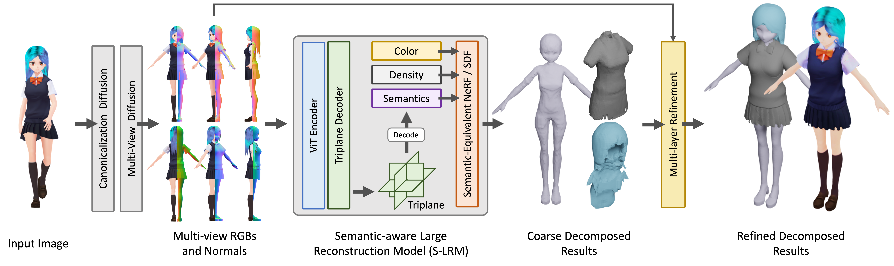

We present StdGEN, an innovative pipeline for generating semantically decomposed high-quality 3D characters from single images, enabling broad applications in virtual reality, gaming, and filmmaking, etc.
Unlike previous methods which struggle with limited decomposability, unsatisfactory quality, and long optimization times, StdGEN features decomposability, effectiveness and efficiency; i.e., it generates intricately detailed 3D characters with separated semantic components such as the body, clothes, and hair, in three minutes.
At the core of StdGEN is our proposed Semantic-aware Large Reconstruction Model (S-LRM), a transformer-based generalizable model that jointly reconstructs geometry, color and semantics from multi-view images in a feed-forward manner. A differentiable multi-layer semantic surface extraction scheme is introduced to acquire meshes from hybrid implicit fields reconstructed by our S-LRM. Additionally, a specialized efficient multi-view diffusion model and an iterative multi-layer surface refinement module are integrated into the pipeline to facilitate high-quality, decomposable 3D character generation.
Extensive experiments demonstrate our state-of-the-art performance in 3D anime character generation, surpassing existing baselines by a significant margin in geometry, texture and decomposability. StdGEN offers ready-to-use semantic-decomposed 3D characters and enables flexible customization for a wide range of applications.
The overview of our StdGEN pipeline. Starting from a single reference image, our method utilizes diffusion models to generate multi-view RGB and normal maps, followed by S-LRM to obtain the color/density and semantic field for 3D reconstruction. Semantic decomposition and part-wise refinement are then applied to produce the final result.
@misc{he2024stdgen,
title={StdGEN: Semantic-Decomposed 3D Character Generation from Single Images},
author={Yuze He and Yanning Zhou and Wang Zhao and Zhongkai Wu and Kaiwen Xiao and Wei Yang and Yong-Jin Liu and Xiao Han},
year={2024},
eprint={2411.05738},
archivePrefix={arXiv},
primaryClass={cs.CV}
}